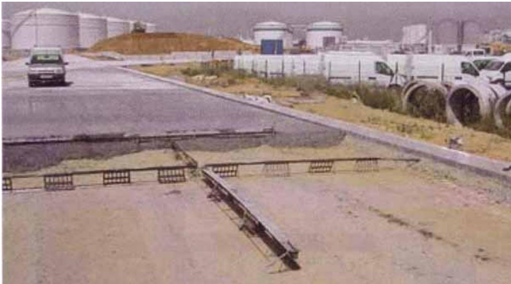
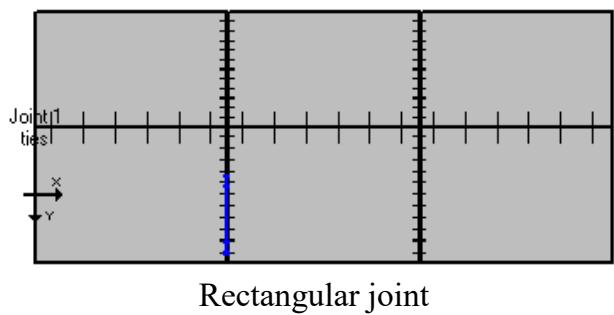
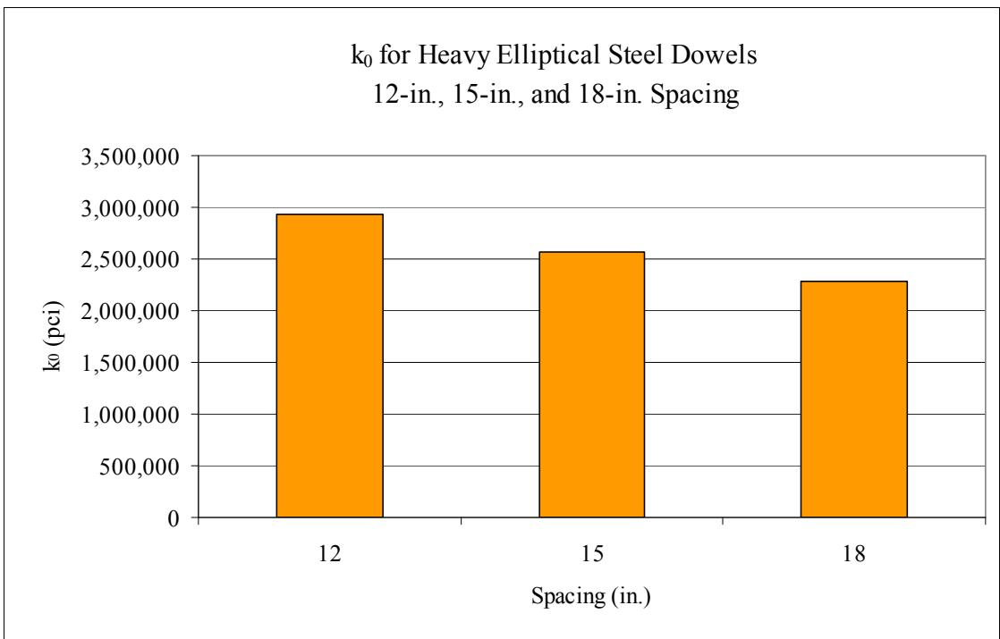
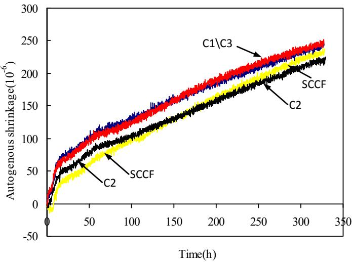
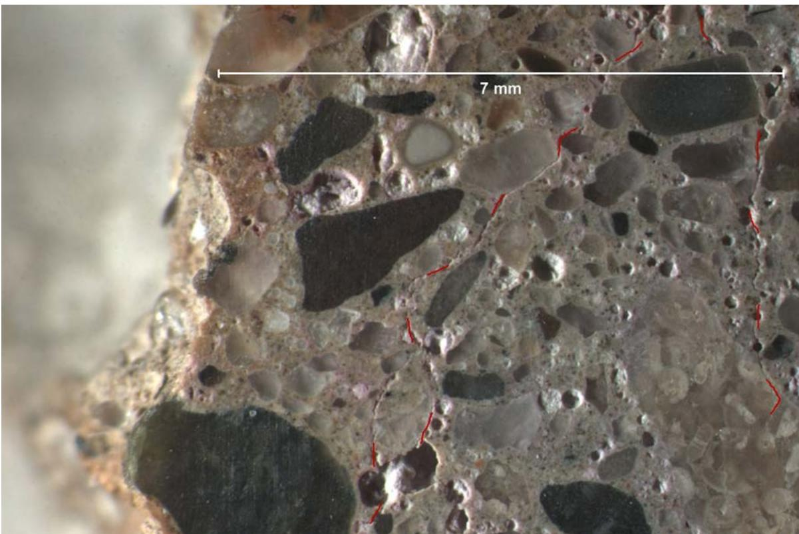
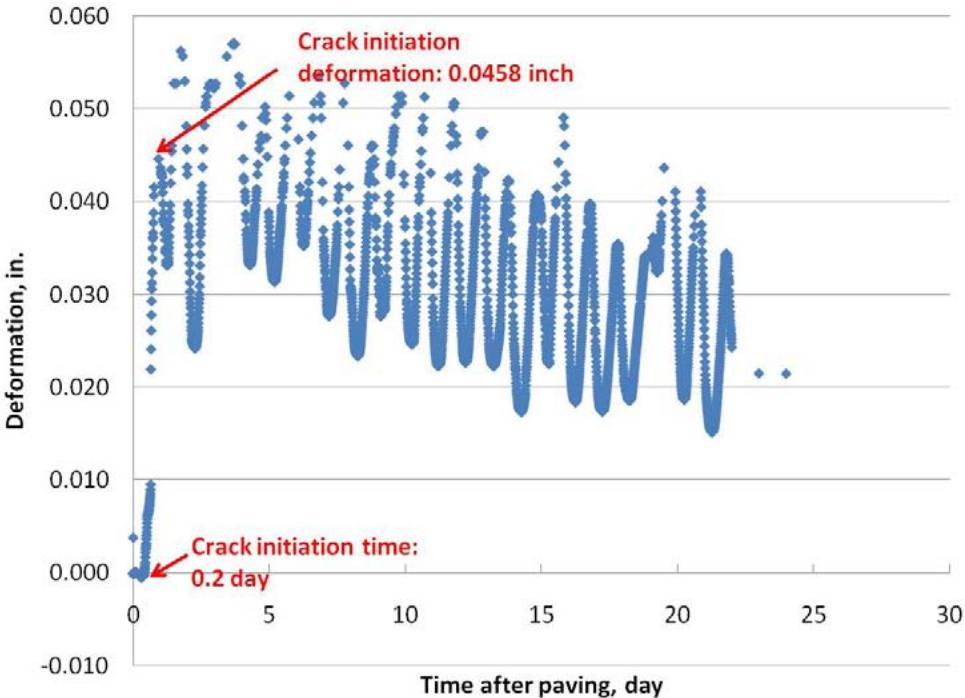
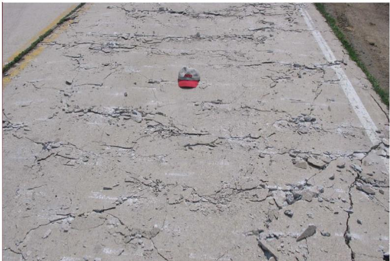

Concrete Pavement Joint
A concrete pavement joint is a deliberate sawed or formed discontinuity in a slab, serving as a specific component of Joints, Dowels & Load Transfer designed to control cracking from thermal and moisture movements [1]. It accommodates dimensional changes caused by temperature, shrinkage, and moisture variations through dowel bars that must slip within the joint [3], [16]. By allowing this necessary movement, the system prevents uncontrolled cracking outside of the intended location, which would otherwise lead to pavement failure [3]. Joints are the most vulnerable element of a concrete pavement, acting as entry points for water and deicing salts and as reservoirs that maintain saturation [1]. These elements differ in function, ranging from monitoring Joint Activation and faulting to facilitating load transfer or defining the temporal constraints for sawing operations [2]–[4].
Sources (36)
Sub-concepts (9)
Introduction to Concrete Pavement Joints
Transverse joints, which are perpendicular to traffic flow, serve as the primary location of Premature Joint Deterioration. In concrete pavements, transverse joint spacing is typically set at intervals around 20 feet, though specific designs may utilize skewed joints to manage slab dimensions and stress distribution across varying lane widths [5]. To function effectively, ideal concrete pavement joints must consolidate around steel reinforcement, provide adequate load transfer, seal the joint or facilitate water migration, resist corrosion, and open and close freely during temperature changes [6].
 Top view of skewed joint [5]
Top view of skewed joint [5]
The joint opening is defined as the physical gap width between adjacent concrete slabs at the pavement surface, measured perpendicular to the joint axis. This measurement characterizes a key property of transverse joints, which are placed at regular intervals to create discontinuities in the pavement and form individual slabs [3].
Joint Types and Construction Methods
Sawcut joints are cut after concrete hardens, typically involving a pilot cut (~5mm wide, 50mm deep) with an optional reservoir cut (~11mm wide, 28mm deep). These joint sawcuts are typically executed to a depth of approximately 3 inches and a width of about 0.5 inches, though some jurisdictions specify that joints be left unsealed if thoroughly cleaned [7]. To prevent water ingress, sealed joints are filled with silicone or hot-pour sealant. Early entry sawing typically results in delayed joint cracking compared to conventional methods, with an average initiation time of 12.3 days versus 0.6 days for cuts reaching one-third of pavement thickness and 2.2 days for one-quarter depth [8]. For transverse joints, early-age saw cutting is performed at a depth of 1.25 inches to control cracking during the initial hydration phase before full concrete strength development [5], while longitudinal joints are typically cut to a depth of 3.4 inches using conventional saws to ensure adequate separation and stress relief along the pavement edges [5]. The timing of joint formation is significantly influenced by aggregate hardness, as harder materials like quartzite and granite require different cut parameters compared to limestone mixes; the sawing window closes as drying begins, a process primarily driven by hydration rates and environmental exposure conditions [4]. Additionally, joint width variations can occur when gang-saw machines utilize multiple blades that are not perfectly aligned, resulting in inconsistent cut dimensions; the weight of such equipment often necessitates delayed sawing operations to avoid leaving impressions or inducing premature cracking [4].
 Joints with different sawing depths in the test sections [8]
Joints with different sawing depths in the test sections [8]
Research has investigated alternatives to sawing for forming transverse joints in plastic concrete. These include vertical metal strips, which are galvanized L-shaped metal angles placed above or below dowel baskets to induce a weakened plane; six configurations were tested on US 20, Fort Dodge, IA (2005) with plate sizes from 38–76 mm height [2]. These vertical metal joint-inducing devices typically range from 3 to 3.5 inches in height with a thickness of approximately 1/8 inch, allowing cracks to migrate vertically through the slab depth; they are installed on grade centers at 2-foot intervals using dowel basket pins driven behind the device to maintain alignment during concrete placement [2]. When positioned above the dowel basket (below vibrators), these strips are typically secured with wire ties at 1-foot intervals, while those placed below the dowels on the base material use pins driven behind the metal ‘L’ shape every 2 feet to prevent overturning during paving [2]. Transverse joint forming devices installed in plastic concrete require a curing period of approximately 30 days before the joints are sawed and sealed, allowing time for crack formation to be monitored over several months via continuous observation during the first two weeks, bi-weekly checks for the following month, and monthly inspections thereafter [2]. Other methods include plastic inserts, specifically the JRI+ Joint developed by Farobel SL, which is placed before paving to eliminate sawing [2], and the use of rolling pizza cutter devices for forming transverse joints, which can create wide joints with loose particles if the tool does not follow the same track during its return pass [9]. For longitudinal joints, a longitudinal joint forming knife (Bobsled) serves as a paver attachment that creates a weakened plane, eliminating longitudinal sawing [10]. Such knives attached to slip-form pavers can create a weakened plane of concrete cream approximately 2 inches deep, effectively eliminating the need for subsequent longitudinal sawing operations [11].

JRI+ joint before concrete placement [2]Early entry sawing is a specific implementation method for concrete pavement joint formation that involves cutting joints within 12 to 18 hours after concrete placement [8]. This technique utilizes lightweight machinery to create shallow notches, typically one inch deep, at an early age of one to four hours following paving [8]. By operating within this narrow time window, the method aims to control random cracking while enhancing productivity and reducing costs compared to conventional sawing practices [8].
The JRI+ Joint is a specific implementation of a concrete pavement joint that utilizes a preformed joint filler combined with a rigid joint reinforcement system to control crack width. This approach addresses the challenges associated with traditional transverse joints, which are typically formed by sawing the surface during the concrete’s set time [2]. Research into such joint-forming methods has examined equipment designed to efficiently induce vertical cracks in dowelled or plain concrete pavements at the time of construction [2].
The sawing window represents a critical construction phase for concrete pavement joints, defined by the optimal temporal interval between paving and cutting [5]. This period is constrained by the material’s strength development to ensure the concrete gains sufficient resistance to prevent edge chipping or aggregate raveling during the sawing process [2], [5]. If sawing occurs outside this window, either too early or too late, it can lead to uncontrolled cracking due to tensile stresses exceeding the concrete’s capacity [5].
SFSCC pavements can be jointed using standard brooming techniques at intervals of approximately 9 feet, eliminating the need for specialized sawing equipment typically required for conventional concrete [12]. Regarding geometry, skewed slab geometries effectively increase the effective slab dimensions compared to rectangular layouts, resulting in higher curling and warping stresses and deflections at the corners [13]. Furthermore, skewed joints have been identified as having a higher potential for inducing longitudinal cracking compared to rectangular joint layouts, particularly in widened traffic lanes where slab geometry is altered [5].

Skewed and rectangular jointed JPCP with widened and regular slab sizes [5]Dowel Bars and Reinforcement Details
Doweled joints are targeted to achieve a 60-year service life in relatively heavy traffic conditions, representing a significant durability benchmark for modern joint design [6]. Because many existing jointed concrete pavements that originally lacked dowels may require retrofitting to control faulting, it is necessary to explore techniques for adding load transfer mechanisms to older structures [6]. Dowel bars used in concrete pavement joints are commonly specified as 18 inches in length with a 1.5-inch diameter, placed within baskets to facilitate load transfer across the joint discontinuity [5]. Longitudinal tie bars are commonly sized as #4 bars with a 0.5-inch diameter, spaced at intervals of approximately 33 inches across the joint to maintain slab alignment [7], though they are also specified as size #5 bars with a 35-inch length and 0.63-inch diameter, inserted every 2.5 feet to maintain alignment between adjacent concrete slabs [5]. Dowel placement can be concentrated primarily within wheel paths, with a configuration of four bars spaced at 12-inch centers per path, positioned six inches from the centerline for the inside lane and 30 inches from the pavement edge for the outside lane; this specific arrangement targets load distribution in high-stress areas while reducing overall material usage compared to full-width joint doweling [14].
Dowel bars function as load transfer devices placed within concrete pavement joints to transmit wheel loads from a loaded slab to an adjacent unloaded one [3]. This mechanism significantly reduces stresses and deflections resulting from joint loading, thereby minimizing faulting, which is defined as the difference in elevation across the joint between two slabs [3]. By facilitating this load transfer, dowel bars help prevent differential vertical deflection and settlement that can otherwise lead to uncomfortable vehicle travel and structural failure [3].
Regarding performance, the modulus of dowel support ($k_0$) is significantly higher in cold joints with no gap compared to those with 1/8-inch or 1/2-inch gaps due to arching action and frictional forces between blocks that reduce shear force transfer through the dowels [15]. Elliptical-shaped dowels reduce bearing contact stress between the concrete and the bar compared to round dowels of equivalent size [16], yet elliptically shaped dowel bars exhibit lower modulus of dowel support values than circular dowels, and their use requires larger diameters to achieve equivalent flexural strength because load transfer occurs via weak axis bending [15]. Furthermore, Glass fiber reinforced polymer (GFRP) dowels produce lower modulus of dowel support values than epoxy-coated or stainless steel dowels, primarily due to their softer material properties and larger diameters which increase the bearing area [15]. Additionally, the polymer matrix in fiber-reinforced polymer (FRP) dowels is hydroscopic and can absorb water, potentially causing swelling that interferes with the slippage mechanism over time [16].

Average k0 for heavy elliptical steel dowels [16]Thermal, Hydration, and Moisture Properties
Joint cracking initiates when internal tensile strain reaches approximately 88.4 microstrain, which corresponds to a deformation of 0.0212 inches in a standard 20-foot concrete slab [8]. The degree of joint opening between adjacent slabs under negative temperature gradients can be affected by drying shrinkage and slab length [13]. This behavior is influenced by the coefficient of thermal expansion for concrete pavements, measured at approximately 1.044E-5 ε/°C [7], or approximately 5.35×10-6 ε/°F when utilizing Class C fly ash as a supplementary cementitious material [5]; these values directly influence the relative opening and closing behavior of joints during diurnal temperature cycles. For a 20-foot length, the theoretical free expansion of a concrete slab due to daily temperature variations typically ranges between 0.011 and 0.033 inches [8]. Slab curvature is further influenced by structural parameters including dowel bars, slab self-weight, and friction at the interface between the slab’s base and subbase [17]. A positive temperature gradient occurs when the slab’s top surface is warmer than its bottom, causing the expanded top area to curl downward relative to the cooler base [17]. Similarly, moisture gradients form when concrete moisture levels differ between the top and bottom of a slab; a positive gradient (higher moisture at the top) leads to downward curvature, while a negative gradient causes upward curling [17]. In situ tests reveal that moisture gradients vary dramatically up to a depth of about 2 inches, with deeper areas of the pavement slab remaining at approximately 80% saturation or higher [17]. Self-desiccation, driven by capillary pore water consumption during cement hydration, reduces internal humidity and contributes to shrinkage that increases curling and warping behavior [17].
 Diurnal slab curvature [17]
Diurnal slab curvature [17]
Concrete pavements utilizing supplementary cementitious materials (SCMs) like fly ash and slag exhibit a lower risk of thermal cracking due to a decreased maximum heat of cement hydration compared to ordinary Portland cement concrete [18]. While the datum temperature for these blended cements increases with higher SCM replacement levels, this variation does not significantly alter pavement traffic opening time determinations when proper strength-time correlations are applied [18]. Curing temperature significantly influences the setting behavior of concrete containing SCMs; reducing the curing temperature from 70°F to 50°F more than doubles the set times for both binary and ternary cement mixtures, whereas increasing the temperature from 70°F to 90°F reduces set times by only about 10%–15%, indicating that these mixes maintain sufficient workability for placing and finishing during hot weather conditions [18]. To manage setting, calorimetric testing using semi-adiabatic devices provides an alternative method for determining concrete setting times by measuring the heat of hydration, which correlates directly with the onset of initial set; this thermal-based approach helps contractors identify when the sawing window opens to prevent random cracking or excessive raveling [4]. Furthermore, calorimetry curves can be used to predict initial set times using the 20 percent fraction method, a prediction that correlates well with initial set measured by ultrasonic pulse velocity (UPV) approaches [19].
 Relationship of initial set derived from calorimetry fraction method and UPV [19]
Relationship of initial set derived from calorimetry fraction method and UPV [19]
Self-flowing slip-form concrete (SFSCC) pavements utilize a modified unrodded slump test with a minimum requirement of 6 inches, where the mixture must exhibit a symmetric cone shape to confirm adequate self-consolidating ability without vibration [12]. The addition of nano-clay materials such as Actigel increases the yield stress, viscosity, and thixotropy of SFSCC, providing a quick viscosity recovery that controls timely shape-holding ability during extrusion [12]. However, SFSCC demonstrates higher drying shrinkage than conventional concrete; this can be mitigated by adding specific nano-clay materials like Metamax that decrease drying shrinkage, whereas Actigel increases it [12]. Additionally, SFSCC exhibits noticeably higher porosity and rapid chloride ion permeability at 28 days compared to conventional pavement concrete, though these properties become comparable at later ages due to the extensive use of supplementary materials [12]. Surface microcracking extending up to 28 mm into the pavement depth can also result from plastic shrinkage due to insufficient curing or over-finishing of unworkable mixes containing dry absorptive aggregates [20].

Autogenous shrinkage of SCCF with 2% addition of different nano-clay types (C1: Actigel; C2: Concresol; C3: Metamax) [12]In contrast, internally cured concrete pavements exhibit a lower coefficient of thermal expansion and modulus of elasticity, which mitigates the negative effects of increasing joint spacing on distress performance over time [21]. This material property modification allows for reduced slab thickness or increased joint spacing while maintaining structural integrity; specifically, the use of internally cured concrete can reduce the minimum required pavement thickness from 8 inches to 7 inches for low-traffic applications without compromising performance limits over a 30-year design life [21]. This reduction in thickness offsets the higher initial material costs associated with internal curing mixtures. Ultimately, internally cured concrete pavements demonstrate improved distress performance over time, requiring less maintenance at later ages compared to conventionally cured counterparts with identical dimensions, resulting in a lower net present value of costs despite potentially higher initial construction expenses [21].
Joint Deterioration Patterns and Mechanisms
Various joint failure mechanisms include faulting, pumping, spalling, breaking of corners, blowups, and transverse cracking that occurs if lockup happens [6]. For instance, corrosion of steel dowels can cause them to expand, effectively locking the joint and preventing the necessary slip for thermal movement [16]. Additionally, dowel bar ripple creates regular disturbances approximately five feet wide with peak-to-trough elevation differences of about 0.25 inches, occurring at the spacing intervals of dowel baskets (typically every 20 feet) and contributing significantly to pavement roughness [22]. In pervious concrete overlays, transverse cracks often initiate approximately 2 to 3 feet from the formed joint, suggesting debonding between the overlay and the underlying pavement near the joint interface [9]; furthermore, formed joints in these overlays that are only partially deep can result in uncracked joints and aggregate interlock, which significantly increases bond stress between the overlay and existing pavement [9].
Joint faulting is a distress of concrete pavement joints defined as the vertical displacement across a joint or crack where the slab on the traffic side settles relative to the non-traffic side [16]. This phenomenon involves measurable differences in elevation between adjacent slabs, with specific measurement protocols often distinguishing between positive and negative faulting based on which side is lower [16].
Deterioration often becomes visible on the joint face before it appears on the top surface, progressing from shadowing—where initial microcracking near joints traps water—to spalling and material loss as advanced deterioration. Because saw cuts are significantly more permeable than the top surface, joints act as reservoirs, maintaining higher saturation than the pavement surface. Tunneling distress manifests as an oval-shaped loss of paste extending from the reservoir sawcut base down approximately 90mm, often accompanied by sub-vertical microcracking on both sides of the joint crack [1]. During saturation with deicer solutions, secondary ettringite deposition can fill the finest air voids adjacent to joint planes without requiring prior distress, reducing entrained air volume from original levels (e.g., 5.4% down to 3.5%) and increasing spacing factors beyond acceptable freeze-thaw resistance limits [1]. This infilling by ettringite progressively compromises freeze-thaw resistance as poor drainage maintains a constant supply of sulfate-laden water [1]. Other moisture-related issues include ice segregation, which occurs when unfrozen water is forced by suction into capillary pores with openings between 50 nm to 1 µm due to pressure gradients caused by sub-zero temperatures [23], and D-cracking, which typically originates at the lower levels of pavement where water saturation is most frequent, driven by thermomechanical pressure gradients rather than solely by ice formation [23].

D DESCRIPTION: The great majority of fine spherical entrained air voidspaces at 98mm depth in the core and directly adjacent to the distressed joint (left) are filled with secondary ettringite. Microcracking, oriented sub-parallel to the distress 15x - ed joint plane, is marked in red dashed line. [1]Sealant and material properties also influence durability; silicone sealants with backer rods often exhibit clean de-bonding from vertical joint surfaces, leaving darkly stained contact areas while maintaining bond integrity only at the thin top meniscus layer [1]. Similarly, hydrophobic sealers may adversely affect freeze-thaw durability in concrete elements under continuous water contact by trapping a saturated layer behind the treated surface, which accelerates scaling due to pumping effects [24]. A 2006 forensic study of twelve projects (Wayne, Oakland, Macomb Counties) found joint spalling and other joint deterioration as the predominant distress, ranging from staining with little deterioration to extensive cracking and deep spalls an inch or more deep on either side of the joint. While multiple deterioration mechanisms were found in every core, the initiating cause could not be determined; however, key factors included ASR from reactive chert in sand (all 23 cores), insufficient air void systems (39% inadequate spacing factor), dry absorptive slag aggregate, and w/c variations at construction joints [20]. Notably, construction joints with excessive water-cement ratios (exceeding 0.50) exhibit significantly higher susceptibility to early cracking and freeze-thaw deterioration compared to properly proportioned sections [20].
 High water-cement ratio and cracking left half of the cold joint [20]
High water-cement ratio and cracking left half of the cold joint [20]
Because joints can act as local reservoirs trapping deicing salts and moisture, they may lead to premature failure even when the bulk pavement exhibits sufficient durability [24].
Prevention and Mitigation Strategies
To mitigate early-age issues and improve pavement longevity, various construction and material strategies are employed. Applying an auto-float after the initial float pan significantly reduces dowel bar ripple, which is a major contributor to roughness; in one documented case over 2,980 feet of pavement, this operation reduced the International Roughness Index (IRI) by 11 inches per mile [22]. Regarding slab geometry and timing, thicker and shorter PCC slabs result in a relatively lower degree of curling and warping compared to thinner or longer slab configurations [13]. Nighttime paving is recommended to minimize permanent curling and warping by preventing the temperature gradient change that occurs when daytime-placed concrete cools at its top surface after hardening during nighttime hours [25]. If nighttime scheduling is not feasible, morning paving produces smoother jointed plain concrete pavements compared to afternoon paving [25]. Conversely, construction during the latter half of the day reduces the time fresh concrete is exposed to strong solar radiation, which consequently reduces built-in curling [13]. Additionally, subsequent wetting cycles following construction can mitigate early-age drying shrinkage, leading to a lower degree of overall warping during the pavement’s service life [13].
Material selection and sealing techniques further influence durability. Ternary concrete mixtures utilizing Class F fly ash, GGBFS, and silica fume provide superior mitigation for alkali-silica reactivity (ASR) compared to single supplementary cementitious material applications by balancing high SCM content with reduced risk of individual component incompatibility [20]. However, synthetic or non-vinsol air entraining agents are prone to causing air void clustering in concrete pavements, which compromises the durability of joint areas against freeze-thaw cycles [20]. For maintenance and protection, transverse cracks in deteriorated pavement can be mechanically tied using #4 epoxy-coated rebars stapled at 30-inch intervals perpendicular to the crack direction before overlay placement [11]. Protection also involves effective sealants to prevent water and salt ingress, design details to prevent ponding, and topical sealers applied after construction. Joint widths as narrow as 1/8-inch may be left unsealed provided they are thoroughly cleaned using high-pressure air blasts to remove concrete dust [11]. Furthermore, hydrophobic sealers applied to joint faces increase the water contact angle, which significantly reduces capillary suction potential and primary water absorption rates during the first 0–5 days of exposure [24]. These sealer treatments can reduce the potential for oxychloride formation by creating a hydrophobic layer that limits the reaction between hydrated cement and chloride ions at sawn joint pore walls [24]. Finally, aggregate quality is critical; Class 3 aggregates are graded to show less than 5% deterioration of joints in the first 25 years of service, while Class 3i possesses the highest durability with only 5% joint deterioration in the first 35 years [23].
Design Considerations for Concrete Overlays
In pervious concrete overlays, joint deterioration progresses from significant material loss through raveling to cleaner, more open joints as debris is removed by traffic and rainfall over time [9]. For existing concrete pavements, overlay design procedures may require a 4.5-inch PCC overlay if no bonding is assumed between the new layer and the underlying asphaltic concrete [26], whereas the required thickness can be reduced to 3.5 inches if bond is assumed [26]. For concrete overlays less than 3.5 inches thick, the inclusion of fibers is recommended to increase performance reliability due to strict construction depth control requirements, while for thicker sections exceeding 3.5 inches, fiber addition remains optional as structural integrity is more easily maintained [27]. In ultrathin Portland cement concrete overlays, joint sealing is optional provided that early entry sawing to a depth of T/3 or 1.5 inches is performed as soon as pavement conditions allow [27]. Regarding reinforcement and spacing, tie bars may be omitted in bonded overlays because the structural bond to a milled surface and restraint from median curbs or outside shoulders provide sufficient load transfer without additional reinforcement [28]. Transverse joint spacing in overlays should generally not exceed twice the overlay depth in inches for normal concrete mixes, though larger spacings may be considered when specific fiber types are included; additionally, longitudinal joints should be avoided within wheel paths whenever possible to minimize distress [27]. For joints in concrete overlays with a performance life of 20 years or less, scaled-down but fully functional designs are required to address the high cost of standard doweled joints relative to their shorter design period [6].
Performance data and modeling provide further guidance on spacing and thickness. Long-term performance data from Iowa indicates that concrete overlays with 5.5- to 6-ft transverse joint spacing maintain a Pavement Condition Index (PCI) above 80 for the first 10 years of service life, whereas 12-ft spacing decreases rapidly below 60 within 22 years [29]. For unbonded concrete on asphalt (UBCOA) overlays, those with 7-inch and 8-inch thicknesses maintain a PCI above 60 for up to 35 years while their IRI remains below 170 in/mi during the first 35 years of service life [29]. However, UBCOA overlays with 12-foot transverse joint spacing experience a rapid decrease in PCI, dropping below 60 within 18 years of service life [29], whereas UBCOA overlays with 15-foot transverse joint spacing maintain a PCI above 70 for up to 35 years, and those with 20-foot spacing remain above 70 for at least 22 years [29]. Mechanistic-empirical modeling indicates that for bonded concrete overlays on asphalt (BCOA), shorter transverse joint spacing of 6 feet yields superior performance compared to longer spacings of 12 to 15 feet, potentially allowing for reduced overlay thickness [30]. Conversely, the Pavement ME software does not recommend thin concrete overlays with a thickness of 4 inches for transverse joint spacings of 12 feet or greater due to predicted rapid increases in the International Roughness Index (IRI) [30].
 20-foot joint spacing concrete overlays Pavement ME Design predicted IRI values versus age: UBCOC [30]
20-foot joint spacing concrete overlays Pavement ME Design predicted IRI values versus age: UBCOC [30]
Joint activation in thin concrete overlays is primarily governed by the ratio of slab length to radius of relative stiffness (L/ℓ), with optimal spacing design targeting an L/ℓ value between 4 and 7 to balance timely crack formation and structural performance [30]. In thin concrete overlays (4-inch to 6-inch), structural synthetic fibers at a dosage of 4 lb/yd3 do not significantly influence joint activation behavior, though they are utilized to enhance fatigue capacity and ductility [30]. Fiber-reinforced concrete overlays can extend joint spacing beyond typical design limits by utilizing macrofibers that bridge developing cracks, carry tensile stresses, and absorb energy to slow crack propagation, allowing the pavement to maintain structural integrity even when joints do not fully activate or open as expected [31]. In concrete overlays with joint spacing of 5.5 to 6 feet, unactivated joints can lead to a characteristic ‘up-and-down’ pattern in load transfer efficiency (LTE) between adjacent slabs, where activated joints open more widely to compensate for the rigid, uncracked sections; despite these localized variations, overall average LTE values in such sections remain high, typically ranging from 88.8% to 92.1%, indicating that unactivated joints do not necessarily predict poor load transfer performance [31]. Finally, the presence of bonding between concrete overlays and underlying asphalt layers significantly enhances joint load transfer efficiency and contributes to the overall structural response by increasing the backcalculated effective thickness; in contrast, deliberately debonded overlays using geotextile separation layers experience higher deflection values (e.g., 7.92 mils) and lower effective thickness compared to bonded sections, which typically show deflections between 3.79 and 5.38 mils [31].
In thin concrete overlays, un-activated joints are predominantly confined to short slab sections that are 10 years old or younger [30].
Concrete overlays with longer joint spacing exhibit increased percentages of joint activation, while greater overlay thickness also correlates with higher activation rates [30].
 Percentage of joints activated for different joint spacing of 6-inch thick concrete overlays [30]
Percentage of joints activated for different joint spacing of 6-inch thick concrete overlays [30]
Advanced Testing and Evaluation Methods
Dowel basket spacing can be identified through periodic roughness shifts in power spectral density plots, where inertial profilers may underestimate longitudinal distance by more than 3% due to calibration errors relative to paving operation data [22]. Power spectral density (PSD) analysis identifies specific joint spacing intervals and concrete load frequencies as dominant wavelengths contributing to pavement roughness; for example, 15-foot joint spacing and 13-foot concrete load spacing have been identified as primary sources of harmonic roughness in hardened profiles [32]. To ensure accurate smoothness assessments, profile measurements should be conducted along the actual traffic wheel path to measure the true effect on drivers, as slab curvature behavior due to environmental loads can influence profile readings [25]. Real-time smoothness (RTS) sensors mounted on slip-form pavers can detect short-wavelength surface irregularities caused by dowel-bar inserters and oscillating correcting beams, which are subsequently smoothed out during auto-floating and hand finishing operations; this discrepancy between real-time and hardened profiles highlights the importance of post-paving finishing techniques in achieving final pavement smoothness [32]. Additionally, stringless robotic total stations used for paver control can introduce regular International Roughness Index (IRI) fluctuations if their spacing is too wide, and reducing the distance between these stations has been shown to improve smoothness results, an effect particularly noticeable on the side of the paver furthest from the control stations [32].
Regarding structural evaluation, a modified AASHTO T253 test procedure using two linear loads parallel to the joint provides more reliable shear force application and mitigates unwanted end block rotation compared to standard testing methods [15]. Load transfer efficiency is calculated using Falling Weight Deflectometer data by dividing the deflection at sensor 3 by the deflection at sensor 1 and multiplying by 100, with results averaged across ten joints per lane to account for variance in pavement characteristics [14]. FWD deflection testing data used to evaluate joint load transfer and support values must be normalized to a standard pavement temperature of 70°F to ensure accurate comparison across different survey periods [27]. Joint opening measurements are established using surveyor mag-nails placed flush with the concrete surface within one hour of paving, positioned 12 inches from the slab edge with a 10-inch separation offset by 5 inches on either side of the joint to serve as a baseline for tracking thermal movement [14]. Nondestructive evaluation using MIRA ultrasonic shear-wave tomography reveals that un-activated joints are predominantly confined to short slab sections (5.5- to 6-foot) in overlays younger than 10 years, whereas longer spacing and greater thickness promote higher activation rates [30].
DEMEC points are embedded strain gauge measurement instruments installed within concrete pavement joints to monitor longitudinal dimensional changes. Specifically, stainless steel discs serving as these reference points are attached to the pavement surface to facilitate DEMEC caliper measurements of joint movement and surface strain [25]. These instruments are strategically placed at successive transverse and longitudinal joints, as well as at slab corners, to characterize slab curling and warping during diurnal cycles [25].
The performance of a concrete pavement joint is quantified by Joint Activation metrics, specifically measuring the effective width of load transfer across the joint interface. Field investigations have utilized test regimes to measure properties such as joint activation behavior and load transfer [31]. These measurements are critical for characterizing the structural response and overall performance of concrete overlays [31].
Load Transfer Efficiency is a performance metric used to evaluate Concrete Pavement Joints. It quantifies the percentage of vertical deflection at a joint that is transferred from the loaded slab to the adjacent unloaded slab [36]. The magnitude of reduction in stresses and deflections at a joint depends on this efficiency, as load transfer helps minimize faulting and pumping by transmitting part of an applied wheel load across the joint [3].
Crack assessment involves automated crack detection systems, such as WiseCrax, which analyze digital video images collected by vehicles like the Roadware Automatic Road Analyzer (ARAN) to classify cracks by type, extent, and severity, determining crack length, width, orientation, and area to generate summary statistics and detailed crack maps [33]. Strain gage measurements indicate that early entry sawing joints can exhibit deformations ranging from 0.0055 to 0.0622 inches, whereas conventional one-quarter thickness cuts show a range of 0.0012 to 0.0410 inches [8]. Furthermore, D-cracking is evaluated by rating closely spaced crescent-shaped hairline cracks from 1 to 5, where a rating of 1 indicates some evidence at joints but no maintenance required, and a 5 indicates severe deterioration requiring regular maintenance or full-depth patching [33].

Example of stress development of early entry sawing [8]Material properties are assessed through various specialized tests. The Super Air Meter (SAM) test on fresh concrete provides a rapid assessment of air void structure quality, where a SAM value below 0.2 is associated with an adequate spacing factor for freeze-thaw resistance [19]. The ultrasonic pulse velocity (UPV) method utilizes the principle that sound wave speed increases as concrete transitions from a fluid to a solid state during hydration, allowing for objective prediction of the saw-cutting window by measuring p-wave propagation through concrete samples using 54 kHz transducers and gel couplants to reduce signal attenuation at interfaces [4]. The Iowa Pore Index (IPI) test measures the volume ratio of macropores to micropores of coarse aggregate via water intrusion at a constant pressure of 35 psi over a span of 15 minutes [23]. Finally, air permeability tests are not reliable for characterizing the performance of concretes treated with sealers because they evaluate gas movement rather than liquid movement, which governs capillary suction [24].
 Air (gas) permeability index for concrete [24]
Air (gas) permeability index for concrete [24]
For nondestructive assessment, MIRA ultrasonic shear-wave tomography enables measurement of joint activation in existing concrete overlays without requiring destructive testing methods [30].
Alternative Joint Management: Rubblization
Rubblization transforms deteriorated concrete pavements into a high-strength granular base with load-distributing characteristics 1.5 to 3 times greater than dense-graded crushed stone, effectively destroying slab action to prevent reflection cracking in subsequent asphalt overlays [34]. The average layer coefficient for rubblized PCC is approximately 0.19, which aligns with values used by several state agencies including Arkansas, Michigan, Mississippi, Ohio, and Pennsylvania for overlay thickness design [34].

Modified Rubblization Method proposed by Antigo [34]Rubblization projects are expected to equal or exceed their design life when the minimum backcalculated elastic modulus of the foundation layers reaches at least 10,000 psi [34]. However, transverse and longitudinal cracking in rubblized pavements typically results from insufficient breaking of PCC slabs, necessitating test pit verification to ensure slab pieces are small enough to prevent reflection cracking [34].
 Picture of longitudinal cracking on HMA-overlaid rubblized PCC (I.D. No. 21: IA3 in Delaware County) [34]
Picture of longitudinal cracking on HMA-overlaid rubblized PCC (I.D. No. 21: IA3 in Delaware County) [34]
Subsurface Void Detection Methods
Voids underneath pavements can be detected using Falling Weight Deflectometer data by plotting applied load measurements against deflection measurements and determining the zero load intercept from a linear regression line, where AASHTO guidelines suggest that an intercept value of 2 mils serves as a critical threshold for identifying void presence beneath the pavement structure [35].
Related Concepts
- Premature Joint Deterioration
- Freeze-Thaw Durability
- Dowel Bar
- Joint Faulting
- Joints, Dowels & Load Transfer
- DEMEC Points
- Early Entry Sawing
- Joint Activation
- Joint Opening
- JRI+ Joint
- Load Transfer Efficiency
- Sawing Window
Finite element modeling of composite pavements often incorporates a one-inch crack depth at pavement edges to simulate joint behavior under truck loading. [11]
Fiber composite dowels spaced at eight inches can maintain a nearly constant load transfer efficiency of approximately 44.5% through two million applied load cycles with a maximum of 9,000 pounds. [3]
At collapse, more than 50% of the dowel section is plasticized over a bar length close to two diameters, with a peak at one diameter from the shear plane. [3]
Accelerated aging solutions of water, lime and salt apparently had little or no affect on the shear strength behavior of any of the dowel bars. [3]
Joint load transfer efficiency (LTE) is a primary measurement need for rigid pavement management systems and can be assessed with sufficient accuracy using high-speed digital cameras or distance measuring devices. [36]
References
- P. Taylor, L. Sutter, and J. Weiss, "Investigation of Deterioration of Joints in Concrete Pavements," National Concrete Pavement Technology Center, Ames, IA, Rep. TPF-5(224), 2012. [Online]. Available: https://www.intrans.iastate.edu/wp-content/uploads/2018/03/joint_deterioration_penetrating_sealers_field_study_w_cvr.pdf
- J. K. Cable, J. Williams, B. L. Shearer, S. Reinert, and R. Steffes, "Evaluation of Transverse Joint Forming Methods for PCC Pavement," CTRE, Iowa State University, Ames, IA, Rep. TR-532, 2006. [Online]. Available: https://www.intrans.iastate.edu/wp-content/uploads/2018/03/transverse_joint.pdf
- M. L. Porter and R. J. Guinn, Jr., "Synthesis of Dowel Bar Research / Assessment of Dowel Bar Research," Center for Transportation Research and Education (CTRE), Iowa State University, Ames, IA, Rep. HR-1080, 2002. [Online]. Available: https://www.intrans.iastate.edu/wp-content/uploads/2018/03/dowelbarsynthesis.pdf
- P. Taylor and X. Wang, "Comparison of Setting Time Measured Using Ultrasonic Wave Propagation with Saw-Cutting Times on Pavements," National Concrete Pavement Technology Center, Ames, IA, Rep. TR-675, 2015. [Online]. Available: https://www.intrans.iastate.edu/wp-content/uploads/2018/03/PCC_setting_time_and_joint_sawing_w_cvr.pdf
- H. Ceylan, S. Kim, Y. Zhang, S. Yang, O. Kaya, K. Gopalakrishnan, and P. Taylor, "Prevention of Longitudinal Cracking in Iowa Widened Concrete Pavement," Institute for Transportation, Ames, IA, Rep. TR-700, 2018. [Online]. Available: https://www.intrans.iastate.edu/wp-content/uploads/2018/07/longitudinal_cracking_prevention_in_widened_concrete_pvmt_w_cvr.pdf
- D. Harrington, R. Rasmussen, D. Merritt, T. Cackler, and P. Taylor, "Long-Term Plan for Concrete Pavement Research and Technology—The Concrete Pavement Road Map (Second Generation): Volume II, Tracks (FHWA-HRT-11-070)," National Center for Concrete Pavement Technology, Iowa State University, Ames, IA, 2012. [Online]. Available: https://www.fhwa.dot.gov/publications/research/infrastructure/pavements/pccp/11070/11070.pdf
- H. Ceylan, D. J. Turner, R. O. Rasmussen, G. K. Chang, J. Grove, S. Kim, and C. S. Reddy, "Impact of Curling, Warping, and Other Early-Age Behavior on Concrete Pavement Smoothness: EFD Study (Phase I)," Center for Transportation Research and Education, Iowa State University, Ames, IA, Rep. DTFH61-01-X-00042 (Project 16), 2005. [Online]. Available: https://www.intrans.iastate.edu/wp-content/uploads/2018/03/curling_warping-2.pdf
- K. Wang, J. Hu, F. Bektas, P. Taylor, and H. Ceylan, "Crack Development in Ternary Mix Concrete Utilizing Various Saw Depths," National Concrete Pavement Technology Center, Ames, IA, Rep. TR-587, 2009. [Online]. Available: https://publications.iowa.gov/19999/1/IADOT_tr_587_Crack_Development_Ternary_Mix_Concrete_Saw_Depths_February_2009.pdf
- V. R. Schaefer and J. T. Kevern, "An Integrated Study of Pervious Concrete Mixture Design for Wearing Course Applications," National Concrete Pavement Technology Center, Ames, IA, 2011. [Online]. Available: https://www.intrans.iastate.edu/wp-content/uploads/2018/03/pervious_overlay_report_w_cvr.pdf
- J. K. Cable, J. L. Morud, and T. R. Tabbert, "Evaluation of Composite Pavement Unbonded Overlays: Phase III," CTRE, Iowa State University, Ames, IA, Rep. TR-478, 2006. [Online]. Available: https://rosap.ntl.bts.gov/view/dot/24065
- J. K. Cable, M. L. Anthony, F. S. Fanous, and B. M. Phares, "Evaluation of Composite Pavement Unbonded Overlays: Phases I and II," Center for Portland Cement Concrete Pavement Technology, Iowa State University, Ames, IA, Rep. TR-478, 2003. [Online]. Available: https://www.intrans.iastate.edu/research/completed/evaluation-of-composite-pavement-unbonded-overlays-phase-iii-tr-478-hr-1093-proj-2/
- K. Wang, S. P. Shah, J. Grove, P. Taylor, P. Wiegand, B. Steffes, G. Lomboy, Z. Quanji, L. Gang, and N. Tregger, "Self-Consolidating Concrete—Applications for Slip-Form Paving: Phase II," National Concrete Pavement Technology Center, Ames, IA, Rep. TPF-5(098), 2011. [Online]. Available: https://www.intrans.iastate.edu/wp-content/uploads/2018/03/SCC_Phase_2_final_report-edited_wcover.pdf
- H. Ceylan, S. Yang, K. Gopalakrishnan, S. Kim, P. Taylor, and A. Alhasan, "Impact of Curling and Warping on Concrete Pavement," Institute for Transportation, Ames, IA, Rep. TR-668, 2016. [Online]. Available: https://www.intrans.iastate.edu/wp-content/uploads/2018/03/curling_and_warping_impact_on_concrete_pvmt_w_cvr.pdf
- J. K. Cable, S. L. Totman, and N. Pierson, "Field Evaluation of Elliptical Steel Dowel Performance," Center for Transportation Research and Education, Ames, IA, 2006. [Online]. Available: https://www.intrans.iastate.edu/wp-content/uploads/2018/03/elliptical-steel-dowels.pdf
- M. L. Porter, J. K. Cable, F. S. Fanous, J. F. Harrington, and N. J. Pierson, "Laboratory Study of Structural Behavior of Alternative Dowel Bars," CTRE, Iowa State University, Ames, IA, Rep. TR-510, 2006. [Online]. Available: https://www.intrans.iastate.edu/wp-content/uploads/2018/03/dowel_bars_web.pdf
- M. L. Porter, J. K. Cable, J. F. Harrington, N. J. Pierson, and A. W. Post, "Field Evaluation of Elliptical Fiber Reinforced Polymer Dowel Performance," PCC Center, Iowa State University, Ames, IA, Rep. DTFH61-01-X-00042 (Project 5), 2005. [Online]. Available: https://www.intrans.iastate.edu/wp-content/uploads/2018/03/frp_dowel.pdf
- K. Tian, D. King, B. Yang, S. Kim, A. Alhasan, and H. Ceylan, "Impact of Curling and Warping on Concrete Pavement: Phase II," Program for Sustainable Pavement Engineering and Research (PROSPER), Iowa State University, Ames, IA, Rep. TR-749, 2023. [Online]. Available: https://intrans.iastate.edu/app/uploads/2023/06/Impact_of_Curling_and_Warping_Phase_II_w_cvr.pdf
- K. Wang and Z. Ge, "Evaluating Properties of Blended Cements for Concrete Pavements," Department of Civil, Construction and Environmental Engineering, Iowa State University, Ames, IA, 2003. [Online]. Available: https://www.intrans.iastate.edu/wp-content/uploads/2018/03/blended_cements-1.pdf
- X. Wang, P. Taylor, and D. King, "Evaluation of Modified Concrete Mixture Proportions for the City of West Des Moines," National Concrete Pavement Technology Center, Ames, IA, 2016. [Online]. Available: https://www.intrans.iastate.edu/wp-content/uploads/2018/03/WDM_modified_concrete_mixture_proportions_w_cvr.pdf
- J. Grove, F. Bektas, and H. Gieselman, "Southeast Michigan Local Road Concrete Pavement Durability Study," National Concrete Pavement Technology Center, Ames, IA, 2006. [Online]. Available: https://www.cptechcenter.org/wp-content/uploads/2018/03/mi_pavement_durability.pdf
- P. Vosoughi, S. Tritsch, H. Ceylan, and P. Taylor, "Lifecycle Cost Analysis of Internally Cured Jointed Plain Concrete Pavement," National Concrete Pavement Technology Center, Ames, IA, Rep. TR-676, 2017. [Online]. Available: https://publications.iowa.gov/27038/
- J. K. Cable, S. M. Karamihas, M. Brenner, M. Leichty, T. Tabbert, and J. Williams, "Measuring Pavement Profile at the Slip-Form Paver," Center for Portland Cement Concrete Pavement Technology, Iowa State University, Ames, IA, Rep. TR-512, 2005. [Online]. Available: https://www.intrans.iastate.edu/wp-content/uploads/2018/03/tr512_pavement_profile.pdf
- J. F. Orso, IV and F. Hasiuk, "Calibrating the Iowa Pore Index with Mercury Intrusion Porosimetry and Petrography — Phase II," Geological and Atmospheric Sciences, Ames, IA, Rep. InTrans Project 15-553, 2019. [Online]. Available: https://www.cptechcenter.org/wp-content/uploads/2019/10/calibrating_Iowa_pore_index_phase_II_w_cvr.pdf
- J. T. Kevern, G. Adil, P. Taylor, S. Sadati, and K. Wang, "Evaluation of Penetrating Sealers for Concrete," National Concrete Pavement Technology Center, Iowa State University, Ames, IA, Rep. TR-765, 2022. [Online]. Available: https://www.intrans.iastate.edu/wp-content/uploads/2022/06/concrete_penetrating_sealers_eval_w_cvr.pdf
- H. Ceylan, S. Kim, D. J. Turner, R. O. Rasmussen, G. K. Chang, J. Grove, and K. Gopalakrishnan, "Impact of Curling, Warping, and Other Early-Age Behavior on Concrete Pavement Smoothness: EFD Study (Phase II)," Center for Transportation Research and Education, Ames, IA, 2007. [Online]. Available: https://www.intrans.iastate.edu/wp-content/uploads/2018/03/curling_warping-2.pdf
- J. K. Cable, F. S. Fanous, H. Ceylan, D. Wood, D. Frentress, T. Tabbert, S. Y. Oh, and K. Gopalakrishnan, "Design and Construction Procedures for Concrete Overlay and Widening of Existing Pavements," Center for Portland Cement Concrete Pavement Technology, Iowa State University, Ames, IA, Rep. TR-511, 2005. [Online]. Available: https://www.intrans.iastate.edu/wp-content/uploads/2018/03/oreo_design.pdf
- J. K. Cable and J. Williams, "Evaluation of Unbonded Ultrathin Whitetopping of Brick Streets," CTRE, Iowa State University, Ames, IA, Rep. TR-466, 2006. [Online]. Available: https://www.intrans.iastate.edu/wp-content/uploads/2018/03/whitetopping.pdf
- G. Fick and D. Harrington, "Concrete Overlay Field Application Program, Final Report: Volume I," National Concrete Pavement Technology Center, Ames, IA, 2012. [Online]. Available: https://apps.itd.idaho.gov/apps/manuals/Materials/Materials%20References/OverlayFieldAppFinalReport.pdf
- J. Gross, D. King, D. Harrington, H. Ceylan, Y. A. Chen, S. Kim, P. Taylor, and O. Kaya, "Concrete Overlay Performance on Iowa's Roadways (Field Data Report)," National Concrete Pavement Technology Center, Ames, IA, Rep. TR-698, 2017. [Online]. Available: https://www.intrans.iastate.edu/wp-content/uploads/2017/09/Iowa_concrete_overlay_performance_w_cvr.pdf
- J. Gross, D. King, H. Ceylan, Y. A. Chen, and P. Taylor, "Optimized Joint Spacing for Concrete Overlays with and without Structural Fiber Reinforcement," National Concrete Pavement Technology Center, Ames, IA, Rep. TR-698, 2019. [Online]. Available: https://www.intrans.iastate.edu/wp-content/uploads/2019/06/optimized_joint_spacing_for_overlays_w_cvr.pdf
- D. King, B. Yang, P. Taylor, and H. Ceylan, "Field Performance of Fiber-Reinforced Concrete Overlays," Institute for Transportation, Iowa State University, Ames, IA, Rep. TR-816, 2025. [Online]. Available: https://www.intrans.iastate.edu/wp-content/uploads/2025/05/field_performance_of_frc_overlays_w_cvr.pdf
- National Concrete Pavement Technology Center (CP Tech Center), "Implementation Support for SHRP2 Renewal Project R06E — Real-Time Smoothness Measurements on PCC Pavements during Construction," National Concrete Pavement Technology Center (CP Tech Center), Ames, IA, 2019. [Online]. Available: https://cptechcenter.org/research/completed/implementation-support-for-shrp2-renewal-project-r06e-real-time-smoothness-measurements-on-portland-cement-concrete-pavements-during-construction/
- S. Schlorholtz, B. Dawson, and M. Scott, "Development of In Situ Detection Methods for Materials-Related Distress (MRD) in Concrete Pavements: Phase 1," Center for Portland Cement Concrete Pavement Technology, Iowa State University, Ames, IA, Rep. CTRE 00-96, 2003. [Online]. Available: https://www.intrans.iastate.edu/wp-content/uploads/2018/03/mrd.pdf
- H. Ceylan, K. Gopalakrishnan, and S. Kim, "Rehabilitation of Concrete Pavements Utilizing Rubblization and Crack and Seat Methods (Phase II): Performance Evaluation of Rubblized Pavements in Iowa," CTRE, Iowa State University, Ames, IA, Rep. TR-550, 2008. [Online]. Available: https://www.intrans.iastate.edu/wp-content/uploads/2018/10/rubblization_pavements.pdf
- D. White and P. Vennapusa, "Optimizing Pavement Base, Subbase, and Subgrade Layers for Cost and Performance on Local Roads," Concrete Pavement Technology Center and Center for Earthworks Engineering Research, Ames, IA, Rep. TR-640, 2014. [Online]. Available: https://www.intrans.iastate.edu/wp-content/uploads/2018/03/local_rd_pvmt_optimization_w_cvr.pdf
- B. M. Phares, H. Ceylan, R. Souleyrette, O. Smadi, and K. Gopalakrishnan, "Development of a High Speed Rigid Pavement Analyzer – Phase I Feasibility and Need Study," National Concrete Pavement Technology Center, Ames, IA, Rep. TPF-5(136), 2008. [Online]. Available: https://www.intrans.iastate.edu/wp-content/uploads/2018/03/high_speed_pvmt_analyzer_w_cvr.pdf